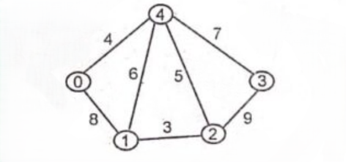
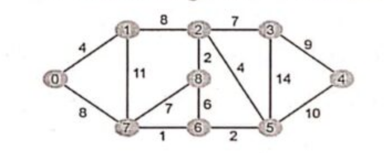
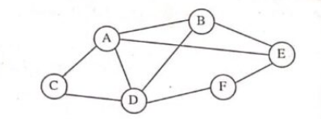
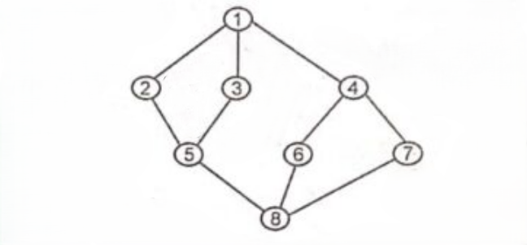

Rajiv Gandhi Proudyogiki Vishwavidyalaya, Bhopal
New Scheme Based On AICTE Flexible Curricula
Computer Science and Engineering | III-Semester
Unit 1: Introduction to Data Structures & Linear Data Structures
Review of C programming language. Introduction to Data Structure: Concepts of Data and Information, Classification of Data structures, Abstract Data Types, Implementation aspects: Memory representation. Data structures operations and its cost estimation. Introduction to linear data structures- Arrays, Linked List: Representation of linked list in memory, different implementation of linked list. Circular linked list, doubly linked list, etc. Application of linked list: polynomial manipulation using linked list, etc.
Previous Years questions appears in RGPV exam.
Q.1) Describe the difference between an abstract data type specification and implementation. (June-2025)
What are the different abstract data types? Explain. (June-2023)
Q.2) How is a two dimensional array represented in memory? Calculate amount memory required to store this array and the accessing function for it. (June-2025)
What is ADT? Compute the addresses of a 3-D array in a row and column major form? (Dec-2023)
Q.3) Give the implementation of circular linked list. Also give its application. (June-2025)
Write an algorithm for insert and delete operations in circular linked list. (June-2024, June-2023)
Explain briefly about the Circular Linked list and it operations. (Nov-2022)
Q.4) Discuss various classification of data structures with an example. (June-2025)
Define data structures. Classify different types of data structures. (Dec-2024)
Q.5) Write an algorithm for traversing nodes in a single linked list? Explain with an example. (Dec-2024)
Q.6) Compare and contrast the characteristics of arrays and linked lists as abstract data types. (Dec-2024)
Q.7) Describe the concept of a dynamic array and how it differs from a static array in terms of memory management and flexibility. (Dec-2024)
Q.8) Describe Asymptotic notation in detail. (June-2024)
Q.9) What is the worst-case complexity of each of the following code fragments?
i) Two Loops in a row...
ii) A nested loop followed by a non-nested loop... (Dec-2023)
Q.10) Consider the following function that takes reference to head of a Doubly Linked List as parameter... [Code snippet for Doubly LL manipulation] ... what should be the modified linked list after the function call? (Dec-2023)
Q.11) Describe the performance of the algorithms used to multiply two N $\times$ N matrices using suitable measures of complexity. You should make clear what operations you are counting... Also consider space complexity? (Dec-2023)
Q.12) What is a linked list? Explain its operations with examples. (June-2023)
Q.13) What are the different operations performed on data structures? Explain. (Nov-2022)
Q.14) How linked list is represented in memory? Explain. (Nov-2022)
Expected Sample Questions for Dec-2025 Exam (Based on Syllabus Analysis)
Q.1) Discuss the representation of polynomials using a linked list. Write an algorithm to add two polynomials. (Predicted)
Q.2) Explain sparse matrix representation using Arrays and Linked Lists. (Predicted)
Q.3) Explain Time and Space complexity. Define Big-Oh, Omega, and Theta notations with examples. (Predicted)
Q.4) Write an algorithm to reverse a Doubly Linked List. (Predicted)
Q.5) Calculate the address of element A[i][j] in a 2D array assuming Row-Major and Column-Major order, given base address and size of element. (Predicted)
Unit 2: Stacks and Queues
Stacks: Stacks as ADT, Different implementation of stack, multiple stacks. Application of Stack: Conversion of infix to postfix notation using stack, evaluation of postfix expression, Recursion. Queues: Queues as ADT, Different implementation of queue, Circular queue, Concept of Dqueue and Priority Queue, Queue simulation, Application of queues.
Previous Years questions appears in RGPV exam.
Q.1) What is Stack? Why it is known of LIFO? Write algorithm of PUSH, POP and CHANGE operation on stack. (June-2025)
Explain the operations performed on stack with a program. (Nov-2022)
Q.2) Write a ‘C’ program to convert the infix expression to postfix expression. (June-2025, June-2024, June-2023)
How can you convert an infix expression to postfix expression using stack? Give one example. (June-2024)
Transform the following expression in Postfix Notation: $A + (B + D) / E - F * (G + H/K)$ (Dec-2023)
Convert the following infix to post fix expression. $A + B - C * D * E \$ F \$ G$ (Nov-2022)
Q.3) Differentiate between the stack and queue. (June-2025, June-2024, June-2023)
Q.4) What are circular queue and priority queue? Write an algorithm in insert and delete an element from a circular queue. (June-2025)
Explain the addition and deletion operations performed on a circular queue with necessary algorithms. (Dec-2024)
Q.5) Write short notes on: Postfix evaluation. (June-2025, June-2024, Nov-2022)
Evaluate the following postfix expression: $ABC * D/+$ where $A = 2, B = 3, C = 4, D = 6$. (Dec-2023)
Q.6) Write an algorithm which reverses the order of elements on stack using one additional stack and some additional variables. (Dec-2024)
Q.7) Write an algorithm for Push and Pop operations on Stack using linked list. (Dec-2024)
Write short notes on: Stack using linked list. (June-2023)
Q.8) What is a DeQueue? Explain its operation with example. (Dec-2024)
Q.9) What is Recursion? Explain in detail with example. (June-2024)
Q.10) Write short notes on: Queue using linked list. (June-2024, Nov-2022)
Write an algorithm to enque and deque an element in a queue? The queue implementation using a linked list? (Dec-2023)
Q.11) What do you mean by tower of Hanoi Problem? Explain with suitable example along with diagram? (Dec-2023)
Q.12) Write short notes on: Priority queue. (June-2023)
Expected Sample Questions for Dec-2025 Exam (Based on Syllabus Analysis)
Q.1) Explain the implementation of multiple stacks in a single array. (Predicted)
Q.2) Write an algorithm to check for balanced parentheses in an expression using a stack. (Predicted)
Q.3) Discuss the limitations of linear queues and how circular queues overcome them. (Predicted)
Q.4) Explain input-restricted and output-restricted Deque. (Predicted)
Q.5) Write a recursive function to find the factorial of a number and explain the stack operations involved. (Predicted)
Unit 3: Trees
Tree: Definitions - Height, depth, order, degree etc. Binary Search Tree - Operations, Traversal, Search. AVL Tree, Heap, Applications and comparison of various types of tree; Introduction to forest, multi-way Tree, B tree, B+ tree, B* tree and red-black tree.
Previous Years questions appears in RGPV exam.
Q.1) Explain Red black trees also discuss the properties of red black tree. (June-2025)
Write short notes on: Red Black Tree. (Dec-2024)
Insert the following list of elements from the red black tree. Delete the elements 18, 2, 30 from the 12, 30, 36, 18, 25, 9, 4, 2, 17, 14, 20 and 47. (Nov-2022)
Q.2) Construct an AVL search tree by inserting the following elements in order of their occurrence: 64, 1, 44, 26, 13, 110, 98, 85. (June-2025)
Insert the following list of elements from the avl tree. Delete the elements 18, 2, 30 from the 12, 30, 36, 18, 25, 9, 4, 2, 17, 14, 20 and 47. (June-2023)
Insert the following data keys in the AVL Tree: 16, 23, 9, 163, 64, 29, 73, 83, 90, 96 (10 keys). (Dec-2023)
Q.3) Write short notes on: B-tree. (June-2025, June-2023, Nov-2022)
What is a B-tree? Explain. (Dec-2023)
Q.4) Construct an expression tree for the expression (a+b*c) + ((d*e+f)*g). Apply inorder, preorder and postorder traversals on tree. (Dec-2024)
Q.5) Create a binary search tree for the following numbers 45, 26, 10, 60, 70, 30, 40. Start from an empty binary search tree. Delete keys 10, 60 and 45 one after the other and show the trees at each stage. (Dec-2024)
Write a 'C' program, how to insert and delete elements in the Binary search tree? (June-2024, Nov-2022)
Q.6) Describe the algorithms used to perform single and double rotation on AVL tree. (Dec-2024)
Q.7) How a binary search tree is traversed? Explain with a suitable example. (June-2024, June-2023)
Q.8) Write functions to implement recursive versions of preorder, inorder and postorder traversals of a binary tree. (June-2024)
Q.9) Write short notes on: B+ tree. (June-2024, Nov-2022)
Q.10) The in-order and pre-order traversal sequence of a node in a binary tree are given below:
In-order: E A C K F H D B G
Pre-order: F A E K C D H G B
Draw the binary tree. State briefly the logic used to construct the tree. (Dec-2023)
Q.11) Is there any difference between threaded and unthreaded binary tree? (Dec-2023)
Q.12) What is heap data structure? Explain its operations with a suitable example. (June-2023)
Q.13) What are the different terminologies used in the trees? Explain with suitable diagrams. (Nov-2022)
Expected Sample Questions for Dec-2025 Exam (Based on Syllabus Analysis)
Q.1) Differentiate between B-Tree and B+ Tree. Why is B+ Tree preferred for database indexing? (Predicted)
Q.2) Explain Threaded Binary Trees. What is the advantage of using threading? (Predicted)
Q.3) Write an algorithm to find the height and depth of a binary tree. (Predicted)
Q.4) Explain the structure of a Max Heap and a Min Heap. How is deletion performed in a Max Heap? (Predicted)
Q.5) Write an algorithm to convert a general tree into a binary tree. (Predicted)
Unit 4: Graphs
Graphs: Introduction, Classification of graph: Directed and Undirected graphs, etc, Representation, Graph Traversal: Depth First Search (DFS), Breadth First Search (BFS), Graph algorithm: Minimum Spanning Tree (MST)- Kruskal, Prim’s algorithms. Dijkstra’s shortest path algorithm; Comparison between different graph algorithms. Application of graphs.
Previous Years questions appears in RGPV exam.
Q.1) Explain Dijkstra algorithm with the help of example. (June-2025)
Q.2) Write a C function to create the adjacency list representation of a graph, given its adjacency matrix representation. (June-2025)
Q.3) Write short notes on: Prim’s algorithm. (June-2025)
Define minimum spanning tree. Write down Prim's algorithm to find minimum spanning tree. (Dec-2024)
Write Prim's algorithm to get minimal spanning tree out of a graph? (Dec-2023)
Discuss Prims algorithm with an following graph.

(Nov-2022)Q.4) Differentiate between Depth first search and Breadth First search algorithm. (Dec-2024)
Compare and contrast bfs and dfs. (June-2023)
Q.5) Discuss Kruskal's algorithm with an following graph.

(June-2024, Nov-2022)Discuss kruskals algorithm with an following graph.
(June-2023)Q.6) For the graph shown below find the following:
i) Adjacency list representation
ii) Adjacency matrix representation
iii) Adjacency multi list representation

(Dec-2023)Q.7) Write algorithms for DFS and BFS traversal on a graph. (Dec-2023)
Solve BFS and DFS traversal of following graph.

(Nov-2022)Expected Sample Questions for Dec-2025 Exam (Based on Syllabus Analysis)
Q.1) Explain the Warshall's algorithm to find the Transitive Closure of a graph. (Predicted)
Q.2) Differentiate between Prim's and Kruskal's algorithm. Which one is better for dense graphs? (Predicted)
Q.3) Explain topological sorting with an example. (Predicted)
Q.4) How can we detect a cycle in a directed graph using DFS? (Predicted)
Q.5) Discuss the graph coloring problem and its applications. (Predicted)
Unit 5: Sorting, Searching, and Hashing
Sorting: Introduction, Sort methods like: Bubble Sort, Quick sort. Selection sort, Heap sort, Insertion sort, Shell sort, Merge sort and Radix sort; comparison of various sorting techniques. Searching: Basic Search Techniques: Sequential search, Binary search, Comparison of search methods. Hashing & Indexing. Case Study: Application of various data structures in operating system, DBMS etc.
Previous Years questions appears in RGPV exam.
Q.1) Write a Heap sort algorithm. Use Heap sort algorithm to sort the following element: 12, 3, 9, 14, 10, 18, 8, 23. (June-2025)
Write short notes on: Heap Sort. (Dec-2024)
Q.2) What are hash function? Write down various popular hash function with example. (June-2025)
Write short notes on: Hashing. (June-2024, Nov-2022)
Write short notes on: Hashing and Indexing. (Dec-2024)
Q.3) Write short notes on: Indexing. (June-2025, June-2023)
Q.4) Write short notes on: Shell sort. (June-2025)
Explain shell sort algorithm and simulate it for the following data 35, 33, 42, 10, 14, 19, 27, 44. (June-2024, June-2023)
Q.5) Sort the following elements using quick sort: 55, 72, 12, 45, 88, 38, 27, 33, 91, 80. (Dec-2024)
Sort the following data in ascending order using Quick sort: 9, 4, 12, 6, 5, 10, 7. Prove that Heap sort, Merge sort, Quick sort takes O (n log n) time in the worst case? (Dec-2023)
Q.6) Apply Binary search to search 36 in following list: 21, 12, 36, 32, 38, 23, 56, 83, 92, 5, 10, 15. (Dec-2024)
Apply Binary Search to find 123 in the following list: 49, 98, 101, 123, 149, 194, 199, 211, 240, 286, 840, 930. (Dec-2023)
Explain Binary search and simulate it for the following data 4, 21, 36, 14, 62, 91, 8, 22, 81, 77, 10. (Nov-2022)
Q.7) Explain sequential search and simulate it for the following data 4, 21, 36, 14, 62, 91, 8, 22, 81, 77, 10. (June-2024, June-2023)
Q.8) Explain Multiway Merge sort with an example. (June-2024)
Sort the following list of elements 30, 56, 78, 99, 12, 43, 10, 24, 85 by using merge sort. (June-2023)
Q.9) What do you mean by sorting? Describe the need for sorting. (June-2024)
Q.10) Given the values {2341, 4234, 2839, 430, 22, 397, 3920} a hash table of size 7 and a hash function $h(x) = x \mod 7$, show the resulting table after inserting the values in the given order with each of the following collision strategies.
i) separate chaining
ii) linear probing
iii) double hashing with second hash function $h_1(x) = (2x - 1) \mod 7$. (Dec-2023)
Q.11) Explain bubble sort algorithm and simulate it for the following data 35, 33, 42, 10, 14, 19, 27, 44. (Nov-2022)
Expected Sample Questions for Dec-2025 Exam (Based on Syllabus Analysis)
Q.1) Explain Radix Sort with a suitable example. What is its time complexity? (Predicted)
Q.2) Compare Insertion Sort and Selection Sort. In which scenario is Insertion Sort preferred? (Predicted)
Q.3) Explain Quadratic Probing as a collision resolution technique in hashing. (Predicted)
Q.4) What is Interpolation Search? How does it differ from Binary Search? (Predicted)
Q.5) Discuss the concept of Stable and Unstable sorting algorithms with examples. (Predicted)